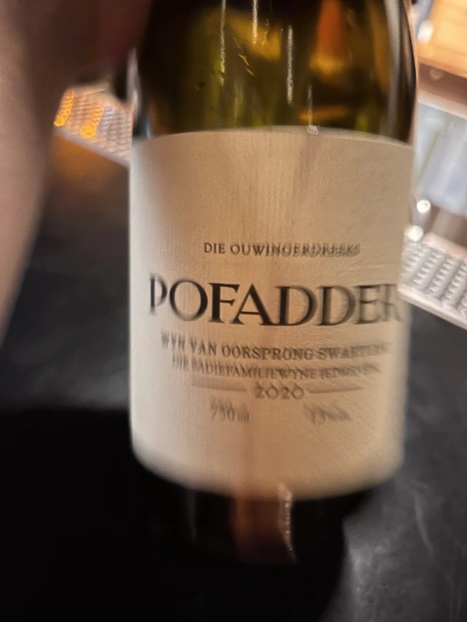
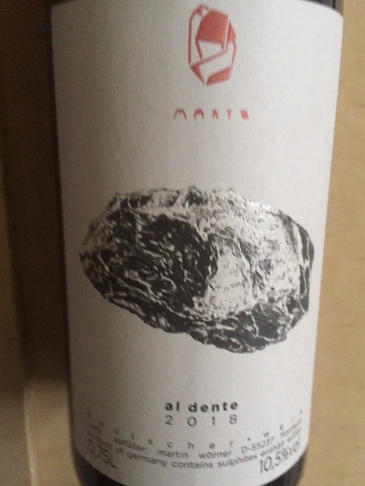

- Type
- White Still, Dry
- Producer
- Sadie Family
- Vintage
- 2018
- Location
- South Africa, WO Swartland
- Grapes
- Chenin Blanc, Palomino Fino
- Alcohol
- 12.5
- Sugar
- 1.5
- Price
- 1600 UAH, 1050 UAH
- Cellar
- N/A
Ratings
2020-11-24 - 8.50
Old vines, Chenin Blan and Palomino. Very interesting and sophisticated wine. Melon, gooseberry, grapefruit, shells, smoke, flint and white flowers. I love the evolution of taste in this wine with its long aftertaste. That rare case when winery deserves all the hype and fuss around.
2022-08-16 - 8.50
An incredible blend of Chenin Blanc and Palomino. It didn’t change much over the last two years, but it became more nuanced and sophisticated. Oxidized quince, quince jam, petroleum, shells, flint, white flowers… Oh là là! It’s a beautiful, delicate and balanced wine. It has everything to develop over time, but it’s so enjoyable at this moment!
Related

Sadie Family
Pofadder - 2020

Sadie Family
Skurfberg - 2020

Sadie Family
Pofadder - 2018

Sadie Family
Skerpioen - 2020

Weinert
Cavas de Weinert Cask Selection - 2009

Alberto Oggero
Roero Nebbiolo - 2015

Alessandro Viola
Le mie Origini - 2019

Domaine de la Touraize
Savagnin oxydatif - 2016

Anne et J.F. Ganevat
Les Miracules - 2017

Clos du Tue-Boeuf
Le Petit Buisson - 2019

Weingut Bründlmayer
Brut Rosé - NV

Marto
Al Dente - 2018

Valentina Passalacqua
Calcarius Rosso Puglia Nu Litr - 2019